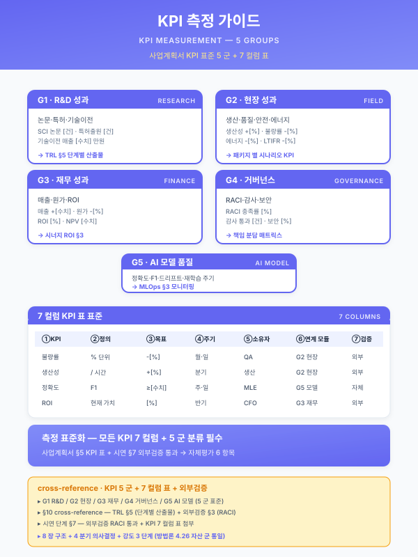

가이드 — KPI 측정·산출·검증 표준¤
📖 약 27 분 읽기

ℹ️ 페이지 정보 (워크스페이스 메타)
자체평가 갭 6 해소. 사업계획서 §6.3 KPI 섹션의 측정 도구·산출 빈도·근거 통합 자산. 운영 가이드 군의 5 번째 멤버 (other/synergy-roi.md · guide/duration-compress.md · 재무_예산_산정_가이드.md · guide/korean-slm.md 에 이은 자산). 4.26 자산 군 포맷 통일 (8 장 구조 — 분류 → 도구 매트릭스 → 빈도 표준 → 검증 절차 → 적용 양식 → 결합 → 확인 필요 → 한계) 적용.
플레이스홀더 범례 —
[수치]수치,[%]비율,[기간]기간,[고객사]고객사명,[공정]공정명,[임계]임계값. (확인 필요) 항목은 §7 에 목록화한다 — KPI 산정 근거·도구 라이센스·OEM 가이드라인 등은 사업·고객사·시점 별 변동 영역이므로 본문에서 확정하지 않는다.본 가이드의 직접 근거 —
guide/assembly.md§6 신규 작성 섹션 (§6.1·§6.3 의 신규 작성 의무) + §8 자체평가 양식;track/track2-index.md§5.5 (3 층 모니터링·드리프트 지표 PSI/KS) · §6.3 (챔피언·챌린저) · §7.2 (KPI 정의·대시보드 5 그룹);other/synergy-roi.md§1·§2.4 (KPI 상호보강 시너지) · §6 (시너지 카드);재무_예산_산정_가이드.md§3 (단위 비용·시너지 보정);guide/korean-slm.md§4.2 (sLM 평가 지표);사업계획서_패키지2/4/5_*.md§6.3 KPI 섹션 — 본 가이드가 인용 대상이 되는 사례 군.
1. KPI 분류 5 군¤
본 가이드는 제조 AI 사업의 KPI 를 발생 원천에 따라 5 군으로 분류한다. 5 군은 mutually exclusive 하게 설계되어 사업계획서 §6.3 본문에서 군별 단독 인용 가능하며, 동시에 collectively exhaustive 하게 제조 AI 사업의 비즈니스·기술·운영·재무 차원을 모두 포괄한다. 5 군 분류는 사업계획서 §6.1 정량 효과 표의 행 분류, §6.3 KPI 정의 표의 시나리오·KPI 매핑, Track 2 §7.2 대시보드의 5 그룹 KPI 트리, 시너지 ROI 모델 §1.4 의 KPI 상호보강 시너지 입력, 재무 가이드 §3 단위 비용 산정의 KPI 입력으로 동일하게 재사용된다.
1.1 품질 KPI (Product Quality)¤
제품·공정 산출물의 품질 변동·수율·결함을 측정하는 KPI 군. 제조 AI 사업의 가장 직접적 정량 효과 영역으로, 사업계획서 §6.1 정량 효과 표의 1 행 또는 단일 시나리오 단독 인용 시 1 차 KPI 가 된다. 대표 지표는 불량률 (PPM·DPMO), 클레임률, 1 차 합격률 (FPY, First-Pass Yield), 표면 결함 검출률·Recall, 치수·물성 표준편차 σ, 재작업률 (Rework Rate), 폐기율 (Scrap Rate). 측정 도구는 MES·QMS·SPC 차트·비전 검사 시스템·작업자 일보·OEM 입고 검사 결과로 구성되며, 산출 빈도는 PLC 센서·비전의 실시간 산출, MES 일 집계, QMS·SPC 의 주·월 보고로 단계적이다. 본 군은 시나리오 SCN-STL-05 (두께 σ), SCN-RUB-02 (압출 외경·두께 σ), SCN-RUB-05 (외관 결함 분류 정확도), SCN-MET-02 (치수 전수검사) 등 패키지 2·4·5 의 핵심 KPI 가 본 군에 위치한다.
1.2 운영 KPI (Operational Performance)¤
설비·라인·공정의 가동·생산성·에너지·재고를 측정하는 KPI 군. 사업계획서 §6.1 정량 효과 표에서 품질 KPI 와 함께 정량 효과의 양대 축을 형성한다. 대표 지표는 OEE (Overall Equipment Effectiveness — 가용도·성능·품질 3 축), 사이클 타임, 재공·재고 회전, 에너지 원단위 (kWh/제품 단위), 가용도 (Availability), 가동률 (Utilization), 사이클 타임 변동성 (CT σ), 피크 부하 시간 비중. 측정 도구는 PLC·MES·FEMS (Factory Energy Management System) ·Historian·SCADA 로 구성되며, 산출 빈도는 PLC·SCADA 실시간, MES 집계 일 단위, FEMS 일·주 단위, OEE 종합 주·월 단위이다. 본 군은 SCN-MET-04 (피크 부하 요금 절감), SCN-STL-09 (압연기 부하 변동), SCN-RUB-04 (압출 가동률), Track 2 §7.2 운영 건전성 그룹 KPI 와 직접 연결된다.
1.3 AI 모델 KPI (Model Performance)¤
AI 모델 자체의 정확도·신뢰도·응답 성능을 측정하는 KPI 군. Track 2 §7.2 의 KPI 5 그룹 중 ① 모델 성능 그룹과 ② 운영 건전성 그룹의 일부에 직접 정합한다. 대표 지표는 정확도 (Accuracy) ·정밀도 (Precision) ·재현율 (Recall), F1 Score, RMSE/MAE/MAPE (회귀 계열), AUROC·AUPRC (이상탐지 계열), 환각률 (Hallucination Rate, LLM·RAG 계열), Citation 정확도·근거 일치율 (RAG 계열), Faithfulness·Answer Relevancy (RAGAS), 응답 지연 P50·P95·P99, 챔피언·챌린저 승급 비율, 캘리브레이션 오차 (ECE). 측정 도구는 MLOps 플랫폼 (MLflow·Weights & Biases) ·Evidently·RAGAS·A/B 테스트 인프라·평가셋 (Golden Set)·사내 라벨링 검증 프로세스로 구성된다. 산출 빈도는 추론 시점의 실시간 산출 (지연·신뢰도) , 라벨 도착 후의 회귀 평가 (주·월) , 챔피언·챌린저 승급 검증의 분기 단위 산출이 결합된다.
1.4 운영 거버넌스 KPI (Operations & Governance)¤
모델 수명·드리프트·재학습 리드타임·HITL 피드백·감사 적합도를 측정하는 KPI 군. Track 2 §5.5 모니터링 + §6.2 재학습 트리거 + §6.5 리뷰 리츄얼이 본 군의 직접 입력이다. 대표 지표는 PSI (Population Stability Index — 0.1 이하 안정 / 0.1~0.25 주의 / 0.25 이상 재학습 검토), KS (Kolmogorov-Smirnov), Jensen-Shannon Distance, 모델 평균 수명 (배포→폐기 평균 [기간]), 드리프트 탐지→조치 리드타임, MTTR (Mean Time To Repair), 알람 정확도 (실제 결함 / 알람 발생 비율), False Alarm Rate, HITL 피드백 수집율·승인율, 모델 카드 완비율, 데이터 리니지 커버리지, 감사 로그 무결성. 측정 도구는 MLOps 플랫폼 (Track 2 §4.2 7 종 구성요소) ·CMMS (정비 이력)·피드백 UI (SCN-MLO-03)·감사 시스템으로 구성되며, 산출 빈도는 모니터링 실시간, 트리거 발생 시 이벤트 단위, 리뷰 리츄얼의 주·월·분기 단위이다.
1.5 사업·재무 KPI (Business & Financial)¤
사업의 매출·ROI·예산 집행·OEM 평가·신뢰도 향상을 측정하는 KPI 군. 시너지 ROI 모델 §1·§3 종합 ROI 산식 + 재무 가이드 §3 단위 비용·시너지 보정의 출력이 본 군의 직접 입력이다. 대표 지표는 매출 영향 (사업 도입 후 매출 증감), ROI (투자 대비 효익 비율), Payback Period (회수 기간), 사업비 집행률 (계획 vs 실집행 비율), 자부담·정부지원 정합 비율, OEM SQA (Supplier Quality Assurance) 점수, 신뢰도 향상 (재거래율·계약 갱신율), 후속 사업 수주율 (사업 종료 후 12·24 개월 시점). 측정 도구는 ERP·SCM·OEM 평가 시스템·재무 결산 시스템·CRM·계약 관리 시스템으로 구성되며, 산출 빈도는 월 (집행률·매출), 분기 (OEM SQA·재거래율), 연 (ROI 종합·사업 효과 검증), 사업 종료 후 12·24 개월 (후속 사업 수주율) 의 다단계 산출이다.
5 군 MECE 자기평가 — 품질 (산출물 차원) · 운영 (설비·라인 차원) · 모델 (AI 차원) · 거버넌스 (운영 차원) · 사업 (재무 차원) 의 5 차원이 상호 배타적으로 분리되어 있고, 한 KPI 가 두 군에 동시 귀속되는 모호 영역이 발견되지 않는다. 또한 제조 AI 사업의 비즈니스·기술·운영·재무 차원을 누락 없이 포괄한다.
2. KPI 측정 도구 매트릭스¤
각 KPI 군의 표준 측정 도구를 매트릭스로 정리한다. 사업계획서 §6.3 본문에 표 1 개로 직접 인용 가능하며, 군별 3~5 행으로 구체 KPI·도구·빈도·정합 자산·책임자를 제시한다.
| KPI 군 | 대표 KPI | 표준 도구 | 산출 빈도 | 정합 자산 | 책임자 |
|---|---|---|---|---|---|
| 품질 | 불량률 (PPM) | MES + QMS + SPC | 일 (집계) / 월 (보고) | track1 §6.3 + 재무 §3.2 | 품질 부서장 |
| 품질 | 1 차 합격률 (FPY) | MES + 작업자 일보 | 일 | track1 §3.4 (수율) | 생산 관리자 |
| 품질 | 표면 결함 Recall | 비전 검사 시스템 + 라벨링 검증 | 일 (자동) / 주 (라벨 회귀) | SCN-RUB-05 + Track 2 §5.5 | QA 검사원 |
| 품질 | 치수·물성 σ | 레이저 치수계 + SPC | 라인 통과별 (실시간) | SCN-RUB-02 + SCN-STL-05 | 공정 엔지니어 |
| 품질 | OEM 클레임률 | OEM 평가 시스템 + ERP | 월 / 분기 | 모듈_OEM_공급망_정합 | 영업·QA |
| 운영 | OEE | MES + PLC + Historian | 일 (집계) / 주 (보고) | track1 §3.5 (운영 효율) | 생산 관리자 |
| 운영 | 사이클 타임 | PLC + MES | 실시간 / 일 | track1 §6.1 | 공정 엔지니어 |
| 운영 | 에너지 원단위 | FEMS + MES (제품 매핑) | 일 / 주 | SCN-MET-04 + 모듈_CBAM | 에너지 담당 |
| 운영 | 가동률 | PLC + SCADA | 실시간 / 일 | track1 §3.5 | 생산 관리자 |
| AI 모델 | 정확도·Recall·F1 | MLOps + 평가셋 | 추론 시점 / 주 회귀 | Track 2 §7.2 ① 모델 성능 | MLOps 엔지니어 |
| AI 모델 | RMSE/MAE | MLflow + 회귀 평가 | 주 / 월 | SCN-STL-05 + Track 2 §7.2 | 데이터 사이언티스트 |
| AI 모델 | 환각률·RAGAS | RAGAS + 평가셋 | 분기 / 신규 모델 배포 시 | track3 §4.2 + sLM 가이드 §4.2 | LLM·RAG 엔지니어 |
| AI 모델 | 응답 지연 P95 | APM (Prometheus) + UI 로그 | 실시간 / 일 | Track 2 §5.5 ① 인프라 | MLOps 엔지니어 |
| AI 모델 | 챔피언·챌린저 승급률 | 챔피언·챌린저 보고서 | 분기 | Track 2 §6.3 | MLOps 엔지니어 |
| 거버넌스 | PSI·KS | Evidently + Prometheus | 실시간 / 일 (임계 검사) | Track 2 §5.5 ② 데이터 분포 | MLOps 엔지니어 |
| 거버넌스 | 모델 평균 수명 | 모델 레지스트리 | 트리거별 / 분기 | Track 2 §6.2 + SCN-MLO-01 | MLOps 엔지니어 |
| 거버넌스 | 드리프트→조치 리드타임 | MLOps 이벤트 로그 | 트리거별 | Track 2 §6.2 5 축 트리거 | MLOps 엔지니어 |
| 거버넌스 | HITL 피드백 수집율 | 피드백 UI (SCN-MLO-03) | 일 / 주 | Track 2 §6.4 | 운영자·QA |
| 거버넌스 | 모델 카드 완비율 | 거버넌스 시스템 | 분기 / 연 (감사) | Track 2 §5.6 + 모듈_OEM | MLOps·감사 |
| 사업·재무 | ROI | 재무 결산 + 시너지 ROI 모델 | 분기 / 연 | 시너지 §3 + 재무 §3 | 사업 책임자·CFO |
| 사업·재무 | 사업비 집행률 | ERP + 회계 | 월 | 재무 §4 | 사업 책임자 |
| 사업·재무 | OEM SQA 점수 | OEM 평가 시스템 | 분기 | 모듈_OEM_공급망_정합 | 영업·QA |
| 사업·재무 | 후속 사업 수주율 | CRM + 계약 시스템 | 사업 종료 후 12·24 개월 | 검토리포트_2026-04-24 | 사업 책임자 |
| 사업·재무 | 매출 영향 | ERP + SCM | 월 / 분기 | 시너지 §6 | CFO·영업 |
매트릭스 채움도 자기평가 — KPI 군 5 × 5 행 = 25 행 구성. 각 행은 (대표 KPI · 도구 · 빈도 · 정합 자산 · 책임자) 5 열을 모두 채워 사업계획서 §6.3 직접 인용 가능. 정합 자산 열은 워크스페이스 자산 6 종 (track1·track2·track3 + 시너지·재무·sLM 가이드 + 모듈) 과의 결합 지점을 명시.
3. 산출 빈도 표준¤
산출 빈도는 KPI 측정 도구·인프라·라벨 도착 지연·운영 부담을 종합 고려하여 6 단계 표준으로 분류한다. 각 KPI 의 표준 빈도는 사업 단계 (PoC·Pilot·운영) 에 따라 단계적으로 강화된다.
3.1 6 단계 빈도 표준¤
- 실시간 (< 1 초~1 분) — PLC 센서·비전 카메라·실시간 추론·모니터링 인프라 메트릭. 무인 자동 산출 (인력 부담 0). 대상 KPI 는 사이클 타임·치수 σ·응답 지연 P95·PSI·CPU·GPU·메모리 사용률.
- 일 (Day) — MES 집계·일보·DR (Drift Report) 일일 리포트·작업자 인계록. 자동 집계 + 작업자 1 회 검수. 대상 KPI 는 OEE·일 불량률·일 가동률·일 에너지 원단위·일 알람 정확도.
- 주 (Week) — 회귀 평가 (Regression Test) ·A/B 검증·드리프트 임계 점검·HITL 피드백 집계. 자동 집계 + MLOps 엔지니어 주 1 회 점검. 대상 KPI 는 모델 정확도 회귀 점검·드리프트 추세·HITL 수집율 추세.
- 월 (Month) — 모니터링 대시보드 종합·SLA 리포트·QMS 월 보고서·재무 월결산. 운영위원회 정례 회의체 안건. 대상 KPI 는 월 불량률·월 매출 영향·사업비 집행률·OEM 클레임률 (월 집계).
- 분기 (Quarter) — 사업 ROI 점검·OEM SQA 분기 평가·재무 정산·챔피언·챌린저 승급 검증·RAGAS 평가셋 회귀·모델 카드 완비율 감사. 대상 KPI 는 분기 ROI·OEM SQA 점수·환각률·챔피언·챌린저 승급 비율.
- 연 (Year) — 라이센스·인증 갱신 (CSAP·ISMS-P·IATF 16949) ·예산 재배분·연 ROI 종합·후속 사업 수주율 (12 개월 시점). 대상 KPI 는 연 ROI 종합·인증 갱신 적합도·후속 사업 수주율.
3.2 사업 단계별 빈도 차이¤
KPI 산출 빈도는 사업 단계에 따라 다르게 운영된다. PoC·Pilot 단계에서는 빈번한 산출로 모델·도구의 정합성을 검증하고, 운영 단계에서는 빈도를 안정화하여 운영 부담을 최소화한다.
| KPI 군 | PoC (1~3 개월) | Pilot (3~6 개월) | 운영 (6 개월 이후) |
|---|---|---|---|
| 품질 | 일 (수기 검증 병행) | 일 (자동 집계) | 일 + 월 보고 |
| 운영 | 일 | 실시간 + 일 | 실시간 + 일 + 주 |
| AI 모델 | 일 (학습 회귀) | 주 (회귀 + A/B) | 주 + 분기 (RAGAS) |
| 거버넌스 | 주 (임계 튜닝) | 일 + 주 | 실시간 (PSI) + 트리거별 |
| 사업·재무 | 월 (PoC ROI 추정) | 월 + 분기 | 분기 + 연 (종합) |
단계별 빈도 강화 원칙 — PoC 단계는 모델·도구의 정합성을 빈번하게 검증하기 위해 빈도를 일·주 단위로 집중하고, 운영 단계는 안정화되어 실시간·일 자동 산출 + 주·월·분기 정례 보고의 균형으로 운영 부담을 최소화한다. 본 표는 사업계획서 §5.5 일정·마일스톤 + §6.3 KPI 정의 본문에서 단계별 빈도 차이의 근거로 인용 가능하다.
4. KPI 검증 절차¤
KPI 의 신뢰성·재현성을 확보하기 위해 사업 전·중·후의 3 단계 검증 절차를 표준화한다. 본 절차는 사업계획서 §6.1·§6.3 + Track 2 §6.5 리뷰 리츄얼 + 시너지 ROI 모델 §3 보수·낙관 케이스 산식과 정합된다.
4.1 Pre-사업 (기준값 산정 — AS-IS 측정)¤
사업 시작 전 4~12 주 기간에 AS-IS 기준값을 측정한다. 본 단계의 목적은 사업 효과를 정량 비교 가능한 출발점을 확보하는 것이며, 측정의 신뢰성이 사업 종료 시점의 효과 검증 신뢰성을 결정한다.
- 측정 인프라 설치 — PLC·MES·FEMS·QMS 의 데이터 추출 정합, 측정 도구의 사내 시스템 연동 검증, 작업자 일보·HMI 입력 표준화. 본 단계의 인프라 구축은 사업 본 추진의 사전 조건이며, 부재 시 사업 §3.5 AS-IS 인프라 항목에서 결손으로 명시.
- 표본 크기·시간대·작업조 분포 균일 확보 — 측정 표본이 특정 시간대 (주간 vs 야간) ·작업조 (조 A vs 조 B) ·제품군 (대량 표준품 vs 소량 특수품) 에 편향되지 않도록 균등 분포로 [기간] 측정. 표본 부족 시 사업 효과 검증의 통계적 유의성이 결손되므로, 표본 크기는 시나리오별 [수치] 회 이상 권고.
- 외부 변동 통제 — 계절 (여름 vs 겨울 — 에너지·습도) ·OEM 변경 (사양 갱신·클레임 대응) ·원자재 변동 (가격·공급사 교체) 등 외부 요인이 AS-IS 기준값에 미치는 영향을 분리 기록. 사업 효과 검증 시 외부 변동 영향을 차감 또는 보정.
- 기준값 표준 양식 — KPI 별 (평균·중앙값·표준편차·5·95 백분위·표본 크기·측정 기간·외부 변동 기록) 7 항목 표준 기록. 본 양식은 사업 종료 시 효과 검증의 기준 데이터로 직접 인용.
4.2 사업 중 (목표값 추적 — In-Project 모니터링)¤
사업 추진 기간 동안 주·월 KPI 모니터링 대시보드 (Track 2 §5.5 정합) 를 통해 기준값 → 목표값의 진행을 상시 추적한다. 본 단계의 목적은 목표 대비 갭 발생 시 조기에 탐지하여 재학습 트리거 또는 사업 일정 조정으로 대응하는 것이다.
- 주·월 KPI 모니터링 — 시나리오별 KPI 의 주 단위 추세·월 단위 종합을 운영위원회 정례 회의체 안건으로 보고 (Track 2 §6.5 리뷰 리츄얼 정합). 주 회의는 MLOps·운영 엔지니어, 월 회의는 운영위원회·고객사 책임자, 분기 회의는 경영진·OEM·정부지원 사업 담당자.
- 목표 대비 갭 탐지 → 재학습 트리거 — KPI 가 목표값에서 [%] 이상 이탈 시 Track 2 §6.2 재학습 트리거 5 축 (드리프트·피드백 누적·외생 이벤트·정기 스케줄·KPI 이탈) 의 5 번째 축으로 작동. 트리거 발생 시 MLOps §5.3 학습·재학습 파이프라인이 자동 실행.
- 목표 대비 갭 탐지 → 사업 일정 조정 — KPI 가 마일스톤 게이트 (§5.5) 의 임계를 통과하지 못하면 Phase 진행 중단 + 원인 분석 + 일정 재계획. 사업기간 압축 가이드 §5.2 의 후순위 시나리오 제거 양식과 정합.
- HITL 피드백 회환 — SCN-MLO-03 단일 피드백 UI 를 통해 작업자·검사원·QA 가 KPI 측정 결과의 실효성·실측 적합도를 환류. 피드백 결과는 §6.4 모듈에 누적 + 다음 사업 단계 KPI 정의 갱신에 입력.
4.3 Post-사업 (효과 검증 — Outcome Validation)¤
사업 종료 시점 + 종료 후 12·24 개월 시점에 효과를 정량 검증한다. 본 단계의 목적은 사업 효과를 사외 검증 수준에서 입증하고, 후속 사업·산단 공동 확장의 근거를 확보하는 것이다.
- 정량 효과 (AS-IS vs TO-BE) — §4.1 의 기준값 + §4.2 의 진행 추적 데이터를 사용하여 (TO-BE - AS-IS) / AS-IS × 100 % 의 개선율 산정. 본 산정은 사업계획서 §6.1 정량 효과 표의 사후 검증 단계.
- 시너지 ROI 모델 §6.1 적용 — 단일 시나리오 효과의 합 + 시너지 ROI 모델 §3 종합 ROI 산식 (α_total = α_data × α_infra × α_hitl × α_kpi) 을 적용하여 결합 시너지를 정량화. 본 산정은 시너지 ROI 모델의 보수·낙관 케이스 양 병기.
- 통계적 유의성 검정 — Welch's t-test (평균 차이) ·순위합 검정 (Mann-Whitney U) ·χ² 검정 (범주형) 을 적용하여 AS-IS vs TO-BE 차이의 통계적 유의성을 p < [임계] 수준에서 검증. 사업계획서 §7.1 챔피언·챌린저 검증 프로토콜과 정합.
- 사외 검증 — OEM SQA 감사 (자동차 부품 1 차 협력사) ·정부지원 정산 (사업 종료 후 1·3·6 개월) ·인증 갱신 (CSAP·ISMS-P·IATF 16949) 의 외부 감사 결과를 검증 자료로 제출. 본 단계는 사업 효과의 외부 신뢰성을 확보.
- 후속 사업 수주율 — 사업 종료 후 12·24 개월 시점의 후속 사업 수주율을 추가 검증 KPI 로 측정. 검토리포트 2026-04-24 의 후속 사업 발판 효과 정합.
검증 절차 직교성 자기평가 — Pre (기준값) · In (목표값 추적) · Post (효과 검증) 의 3 단계가 사업 시점 기준으로 mutually exclusive 하게 분리되어 있고, 각 단계의 산출이 다음 단계의 입력이 되어 직렬 순환 구조를 형성. Track 2 §6.5 리뷰 리츄얼·시너지 ROI 모델 §3 산식·재무 가이드 §4 사업비 집행과 모두 명시적 결합.
5. 사업계획서 §6.3 인용 양식¤
본 가이드의 §1 KPI 5 군 + §2 도구 매트릭스 + §3 빈도 표준 + §4 검증 절차를 사업계획서 §6.3 KPI 섹션 본문에 직접 인용하는 표준 양식이다. 사업 분량·기간·심사 깊이에 따라 3 단계 인용 강도를 제공한다.
5.1 강도 1 (1 표) — 최소 인용 — 9 개월 압축 사업 §6.3¤
사업기간 압축 가이드 §3 의 9 개월 압축 사업에 적용되는 최소 인용 양식. 본 강도는 KPI 정의 + 기준값 + 목표값 + 측정 도구 + 산출 빈도 + 책임자 6 열의 표 1 개로 구성된다.
| 시나리오 | KPI | 정의 | 기준값 | 목표값 | 측정 도구 | 산출 빈도 | 책임자 |
|---|---|---|---|---|---|---|---|
| (시나리오 ID) | (KPI 명) | (1 줄 정의) | [수치] | [수치] | (도구명 1~2 개) | (빈도) | (책임자) |
본 강도는 패키지 5 (정밀가공 중소 SaaS 6 개월 압축) 의 §6.3 표준 양식이며, 표 1 개 + 1 단락 (8 줄 이내) 의 가벼운 인용으로 사업 분량 부담을 최소화한다.
5.2 강도 2 (1 표 + 1 단락) — 표준 인용 — 12 개월 표준 사업 §6.3¤
사업기간 압축 가이드 §3 의 12 개월 표준 사업에 적용되는 표준 인용 양식. 본 강도는 강도 1 의 표 1 개에 본 가이드 §1 KPI 5 군 분류 + §3 산출 빈도 표준의 인용 1 단락 (180~240 자) 을 추가한다.
본 사업의 KPI 는 본 워크스페이스 표준 (
guide/kpi-measurement.md§1) 의 5 군 분류 (품질·운영·AI 모델·거버넌스·사업·재무) 를 채택하며, 산출 빈도는 §3 의 6 단계 표준 (실시간·일·주·월·분기·연) 을 적용한다. KPI 측정·운영 거버넌스는 Track 2 §6.5 월간·분기·연간 리뷰 리츄얼과 정합하며, 운영위원회 정례 회의체 안건으로 직접 연결된다. 5 군별 대표 도구 (MES·QMS·MLOps·CMMS·ERP) 의 정합·단계별 빈도는 본 가이드 §2 도구 매트릭스를 본 사업 시나리오에 맞춰 부분 인용.
본 강도는 패키지 4 (고무 양산 12 개월 표준 사업) ·패키지 2 (중견 냉연 18 개월 풀 사업의 §6.3 부분 인용) 의 §6.3 표준 양식이다.
5.3 강도 3 (1 표 + 2 단락 + 검증 절차) — 풀 인용 — 18 개월 풀 사업·R&D 사업 §6.3¤
사업기간 압축 가이드 §3 의 18 개월 풀 사업 또는 R&D 사업 (전사적 DX 촉진 등) 에 적용되는 풀 인용 양식. 본 강도는 강도 2 + §4 검증 절차 (Pre·In·Post 3 단계) + §2 도구 매트릭스의 행 1~2 군 발췌 인용을 추가한다.
본 강도의 추가 단락 양식은 다음과 같다.
KPI 의 신뢰성 확보를 위해 본 사업은 본 가이드 §4 의 3 단계 검증 절차 (Pre · In · Post) 를 적용한다. Pre-사업 단계 (사업 시작 전 [기간]) 에서는 AS-IS 기준값을 [수치] 회 이상 표본·외부 변동 통제 하에 측정하고, In-사업 단계에서는 Track 2 §5.5 모니터링 대시보드 + §6.5 리뷰 리츄얼을 통해 주·월 KPI 추세를 추적하며, Post-사업 단계에서는 시너지 ROI 모델 §3 의 종합 ROI 산식 + 통계적 유의성 검정 (Welch's t-test) + 외부 감사 (OEM SQA · 정부지원 정산 · 인증 갱신) 를 결합하여 효과를 외부 검증 수준으로 입증한다.
본 강도는 패키지 1 (대기업 전사 AI 공장) ·전사적 DX 촉진 R&D 사업의 §6.3 표준 양식이며, 본 가이드의 §1·§2·§3·§4 가 모두 동원된다.
5.4 인용 강도 선택 기준¤
| 사업 성격 | 사업 분량 | 인용 강도 | 본 가이드 동원 범위 |
|---|---|---|---|
| 9 개월 압축 (패키지 5·SaaS 경량) | §6.3 8 줄 이내 | 강도 1 | §2 매트릭스의 시나리오 행만 발췌 |
| 12 개월 표준 (패키지 4·LG AI 트랙) | §6.3 20~30 줄 | 강도 2 | §1 + §2 + §3 |
| 18 개월 풀 (패키지 2·중견 냉연) | §6.3 40~50 줄 | 강도 3 | §1 + §2 + §3 + §4 |
| R&D 사업 (전사적 DX 촉진) | §6.3 50~70 줄 | 강도 3 + 부록 | §1·§2·§3·§4 + 본 가이드 전문 발췌 부록 |
5.5 패키지별 §6.3 인용 사례 매핑¤
본 가이드의 §5.1·§5.2·§5.3 인용 양식은 워크스페이스의 기존 패키지 사례와 다음과 같이 매핑된다. 본 매핑은 사업계획서 조립 가이드 §6 신규 작성 섹션 의무에 따라 §6.3 표 본체는 매번 새로 작성하되, 본 가이드의 §1·§2·§3 의 분류·도구·빈도 표준이 재사용 자산으로 인용되는 구조를 명확히 한다.
- 패키지 5 (정밀가공 중소 SaaS 6 개월 압축) — 강도 1. KPI 표 8~10 행 (MET-01·02·03·04 · LLM 표준작업 검색 · MLO 경량) + §3 빈도 표준의 일·주 범위 인용. §4 검증 절차는 Post 단계만 간략 1 단락으로 인용.
- 패키지 4 (고무 양산 12 개월 LG AI 트랙) — 강도 2. KPI 표 14~16 행 (RUB-01·02·05 · LLM-03 EXAONE · MLO-01) + §1 5 군 분류 1 단락 + §3 빈도 표준 + Track 2 §6.5 리뷰 리츄얼 결합. 본 가이드 §6.3 sLM 가이드 결합 (§4.2 RAGAS 회귀 평가) 동원.
- 패키지 2 (중견 냉연 18 개월 풀 사업) — 강도 3. KPI 표 18~20 행 (STL-04·05·06·09 · LLM-02 · MLO-03) + §4 Pre·In·Post 검증 절차 + §2 매트릭스의 거버넌스 행 보강 (Track 2 풀 7 종 도입 정합) + §6.1 시너지 ROI 결합 (KPI 상호보강 시너지 STL-04 → STL-09).
- R&D 사업 (전사적 DX 촉진) — 강도 3 + 부록. KPI 표 25~30 행 (전사 12+ 시나리오) + 본 가이드 §1·§2·§3·§4 풀 인용 + §6 4 가이드 결합 (시너지·재무·sLM·압축) 부록 + (확인 필요) 항목 §7 의 분기 1 회 갱신 양식.
6. 시너지 ROI 모델·재무 가이드 결합¤
본 가이드의 KPI 정의·측정·검증이 시너지 ROI 모델 §1.4 (KPI 상호보강 시너지) + 재무 가이드 §3 (단위 비용·시너지 보정) + sLM 가이드 §4.2 (sLM 평가 지표) 의 직접 입력으로 작용한다. 본 §6 은 본 가이드가 운영 가이드 군의 5 번째 멤버로서 다른 4 가이드와의 결합 지점을 명시한다.
6.1 시너지 ROI 모델과의 결합¤
시너지 ROI 모델 §1.4 의 KPI 상호보강 시너지는 한 시나리오의 산출 KPI 가 다른 시나리오의 입력 KPI 로 유입되어 비선형 효과를 만들어내는 구조를 정의한다. 본 가이드의 §1 KPI 5 군 분류는 이 KPI 상호보강 시너지의 측정 단위를 제공한다. 예시: SCN-STL-04 패스 스케줄 안정화 → STL-09 압연기 부하 변동 감소 → 예지보전 모델 알람 정확도 향상의 인과 사슬에서, 패스 스케줄 안정화는 §1.2 운영 KPI (CT σ), 부하 변동은 §1.2 운영 KPI (부하 표준편차), 알람 정확도는 §1.3 AI 모델 KPI (Precision) + §1.4 거버넌스 KPI (False Alarm Rate) 로 분리 측정되고, 시너지 ROI 모델 §3.2 의 α_kpi 산식 (α_kpi = 1 + Σ_pair (ω_ij × γ_ij)) 에서 γ_ij 의 측정 단위가 본 가이드의 KPI 5 군 분류로 표준화된다.
6.2 재무 가이드와의 결합¤
재무 가이드 §3 단위 비용·시너지 보정은 사업비 산정 시 KPI 개선 폭을 시너지 보정 계수로 환산한다. 본 가이드의 §1.5 사업·재무 KPI (ROI·매출 영향·OEM SQA 점수) 는 재무 가이드 §3 의 출력에 해당하며, 본 가이드의 §1.1·§1.2·§1.3·§1.4 의 KPI 4 군은 재무 가이드 §3 의 시너지 보정 계수의 입력에 해당한다. 즉 본 가이드는 재무 가이드의 입력·출력 KPI 양 끝의 측정 표준을 제공한다.
6.3 sLM 가이드와의 결합¤
sLM 가이드 §4.2 평가 지표는 RAGAS·환각률·Citation 정확도·응답 지연 P95 의 4 축으로 sLM 평가를 표준화한다. 본 가이드의 §1.3 AI 모델 KPI 군은 sLM 가이드 §4.2 의 4 축을 포함하며, 본 가이드의 §3 빈도 표준은 sLM 가이드 §4.2 의 회귀 평가 빈도 (분기) 를 §3.1 의 분기 단계로 통합한다.
6.4 사업기간 압축 가이드와의 결합¤
사업기간 압축 가이드 §3 의 9·12·18 개월 분기는 본 가이드의 §5 인용 강도 3 단계 (강도 1·2·3) 와 직접 정합한다. 사업기간 압축 가이드 §5.2 의 후순위 시나리오 제거 양식은 본 가이드 §4.2 의 In-사업 단계 KPI 갭 탐지 → 사업 일정 조정의 운영 양식과 결합된다.
4 가이드 결합도 자기평가 — 시너지 ROI (§6.1 — α_kpi 산식의 측정 단위) · 재무 (§6.2 — 입력·출력 KPI 양 끝의 표준) · sLM (§6.3 — §4.2 4 축의 §1.3 군 통합) · 사업기간 압축 (§6.4 — §3 분기와 §5 인용 강도 정합) 의 4 가이드와 모두 명시적 결합 지점을 보유. 본 가이드는 운영 가이드 군의 5 번째 멤버로서 4 가이드의 KPI 입력·출력 표준을 통합 제공.
7. (확인 필요) 항목¤
KPI 산정 근거·도구·빈도·책임자는 사업·고객사·시점별 변동 영역이므로, 본 가이드의 (확인 필요) 항목을 사업계획서 인용 시점에 검증한다.
- KPI 산정 근거 표준 — 산업별 KPI 표준 (철강·고무·정밀가공 등) ·OEM 별 KPI 가이드라인 (자동차 OEM SQA 표준·전자 OEM 품질 표준) ·정부 지원사업 평가 KPI (스마트공장·디지털 경남 등) 의 명시적 매핑.
- KPI 측정 빈도의 사업 단계별 변동 — PoC vs Pilot vs 운영 단계의 빈도 차이 표준은 §3.2 에 1 차 제시했으나, 시나리오·고객사·인프라 성숙도에 따른 추가 변동 패턴.
- KPI 책임자 RACI — Responsible · Accountable · Consulted · Informed 의 4 역할별 KPI 책임자 매핑의 사내 표준. 본 가이드는 §2 매트릭스에서 단일 책임자만 명시했으나, RACI 표준화는 추가 작업 영역.
- KPI 도구 라이센스 비용·CSAP 정합 — MES·QMS·MLOps·FEMS 의 도구 라이센스 비용·CSAP 등급 (하·중·상) ·국내 데이터센터 정합·ISMS-P 인증 보유 여부.
- KPI 통계적 유의성 검정 표준 — Welch's t-test·Mann-Whitney U·χ² 검정의 사용 분기 + p 임계 [임계] 의 사업·시나리오별 표준.
- KPI 표본 크기 산정 표준 — Pre-사업 기준값 측정의 표본 크기 [수치] 회·시간대·작업조 분포 균일 조건의 시나리오별 표준.
- KPI 외부 변동 통제 표준 — 계절·OEM 변경·원자재 변동의 KPI 영향 분리·보정 표준 + 사업계획서 §6.1·§6.3 의 외부 변동 명시 양식.
- KPI 후속 사업 수주율 측정 표준 — 사업 종료 후 12·24 개월 시점의 후속 사업 수주율의 측정 정의 (어떤 사업이 후속 사업으로 인정되는가의 분기) ·외부 검증 가능성 (CRM 시스템 외부 감사) .
- KPI 갱신 주기 — 본 가이드의 (확인 필요) 항목은 분기 1 회 갱신 권장 (산업·OEM·도구·법규의 분기 단위 변동 속도 기준).
총 9 항목 — 시점·사업·고객사 변동 영역의 정직 노출.
8. 모델 한계¤
- 본 가이드는 프레임 이며, 구체 도구·빈도·책임자는 사업·고객사·시점 별 변동. 본 가이드의 §2 매트릭스 표준 도구 (MES·QMS·MLOps 등) 는 일반적 제조 AI 사업의 1 차 후보이며, 사내 기존 시스템 (
guide/assembly.md§6 §5.4 기존 시스템 연동 신규 작성 섹션) 에 따라 교체 가능. - 측정 도구의 인프라 도입 (MES·QMS·FEMS·MLOps 신규 구축) 은 본 가이드의 범위 외이며, 별도 R&D·인프라 사업 (스마트공장·디지털 경남·R&D 과제) 의 영역. 본 가이드는 도입된 도구의 KPI 측정·산출·검증 표준만 제공.
- KPI 추적 도구의 결과 신뢰성은 도구 설치 정합·작업자 학습·외부 변동 통제에 의존하며, 본 가이드의 §4 검증 절차 (Pre·In·Post) 가 결손되면 KPI 의 신뢰성도 결손된다. 사업계획서 §3.5 AS-IS 인프라 항목에서 도구 설치 결손이 명시되면, 본 가이드의 §4.1 Pre-사업 단계가 4~12 주 → [기간] 으로 추가 연장될 수 있다.
- 본 가이드는 제조 도메인 중심 이며, 금융·의료·법률·공공 등 비제조 도메인의 KPI 표준은 별도 가이드 후속 작성 권장.
- 본 가이드는 운영 가이드 군의 5 번째 멤버 이며, 시너지 ROI · 사업기간 압축 · 재무 · sLM 의 4 가이드와의 결합을 §6 에 명시. 후속 자산 (예: 가이드_데이터_품질·가이드_HITL_운영·가이드_OEM_정합 등) 작성 시 본 가이드의 8 장 구조 (분류 → 도구 매트릭스 → 빈도 표준 → 검증 절차 → 적용 양식 → 결합 → 확인 필요 → 한계) 를 표준 포맷으로 준용 (4.26 자산 군 포맷 통일).
9. 추후 보강 후보¤
본 가이드의 향후 보강 후보는 다음과 같다.
- 산업별 KPI 보강 카드 — 철강·고무·정밀가공·자동차 부품·반도체 등 산업별 KPI 보강 카드 추가. 본 가이드 §1 의 5 군 분류는 일반 프레임이며, 산업별 특화 KPI (예: 철강의 코일 단중·스트립 인장강도, 고무의 점도·분산도, 정밀가공의 표면 거칠기·진원도) 는 산업 카드로 분리 작성.
- OEM 별 SQA 정합 KPI 표준 — 자동차 OEM (현대·기아·GM·포드·도요타) ·전자 OEM (삼성·LG·애플) ·기계 OEM (지멘스·ABB) 별 SQA 평가 KPI 의 명시적 매핑. 모듈_OEM_공급망_정합 의 보강 영역.
- RACI 표준화 — KPI 책임자의 R·A·C·I 4 역할 매핑의 사내 표준화. 본 가이드 §2 매트릭스의 단일 책임자 컬럼을 4 역할 컬럼으로 확장.
- KPI 대시보드 와이어프레임 — Track 2 §7.2 의 3 계층 대시보드 (경영진·운영자·엔지니어) 와이어프레임 + 본 가이드의 5 군 KPI 트리 통합 도식. 사업계획서 §6.3·§7.2 직접 인용 가능 수준의 가시 자산.
- KPI 사례 카드 시리즈 — 패키지 1·2·3·4·5·6 별 §6.3 KPI 정의 표의 실 사례 카드 + 본 가이드의 §5 인용 강도와의 매핑. 본 가이드의 추상 프레임 → 구체 사례 보강.
- KPI 검증 절차의 외부 검증 자료 양식 — §4.3 Post-사업의 OEM SQA 감사·정부지원 정산·인증 갱신 결과 자료의 표준 양식. 사업 종료 보고서·후속 사업 신청서의 직접 인용 가능 수준.
10. 다년 R&D KPI 차원 보강 ( — 갭 #9·#7)¤
(#33) 신규 갭 #9 (다년 KPI + 측정 방법 + 실측 표) + #7 (1단계 9개월 월별 업무 분포) 보강. 본 §10 은 단년 R&D 의 단일 KPI 표 표준에 다년 R&D 의 단계+연차 분기 + 측정 방법 3 차원 + 1단계 9개월 월별 업무 분포의 3 보강을 추가한다.
10.1 단계+연차 KPI 분기 표 (다년 R&D 양식 강제)¤
다년 R&D 양식은 KPI 를 단계 (1·2-1·2-2) 별 마일스톤 + 측정 시점으로 분리 강제한다 ( 단계+연차 이중 구조).
| 단계 | 연차 | 핵심 마일스톤 | KPI 측정 시점 | 측정 대상 |
|---|---|---|---|---|
| 1단계 | 1년차 (9개월) | 컨설팅 보고서 1식 + 역량 분석 + DX 추진전략·로드맵 확정 | 1단계 종료 시점 | 컨설팅 결과물·전략 보고서·로드맵 문서 (정성) |
| 2단계 | 1년차 (12개월) | 현장 데이터 수집 인프라 [%] 구축 + PLC·HMI·Tag 통합 + 시작품 (TRL 5~6) | 2단계 1년차 종료 시점 | PLC·HMI 연결 수·Tag 수집율·OPC-UA 통신·MES·ERP 연동률 |
| 2단계 | 2년차 (12~14개월) | AI 활용 시스템 운영 + 통합 관제 플랫폼 표준화 + KPI 7 종 실측 (TRL 7~8) | 2단계 2년차 종료 시점 | KPI 7 종 (Q·P·C) — 정량 |
10.2 KPI 측정 방법 3 차원 (시점·소스·표준)¤
다년 R&D 양식은 단년 R&D 의 단일 시점·단일 소스·내부 자체평가의 3 단일 표준 대신 다음 3 차원을 강제한다.
(1) 측정 시점 단계별 분리 — 단계 종료 시점 + 단계 중간 점검 + 최종 점검의 3 시점. 1단계 정성 KPI 중심, 2단계 1년차 시작품 중간 점검, 2단계 2년차 종료 시점이 최종 정량 KPI 측정.
(2) 측정 데이터 출처의 다중 소스화 — 단일 MES 출처가 아닌 MES + SCADA + X-DAS + 비전 카메라 + 환경 센서 다 소스 융합. KPI 별 출처 명시 + 출처 간 정합성 검증.
(3) 측정 표준 + 외부 검증 — ISO 9001 (Q) + KS X 9001 (스마트공장) + EU CBAM Implementing Regulation (C) + KOSHA 안전 표준 등 양식·도메인별 측정 표준. 단계 종료 시점 외부 검증 보고서로 객관성 확보.
10.3 1단계 9개월 월별 업무 분포 (갭 #7)¤
다년 R&D 1단계 (9개월) 의 「월별 주요 업무 (비중별 정리)」 표 양식 (양식 §3.1-7 강제):
| 월 (1단계) | 핵심 업무 (비중 %) | KPI 측정 시점 |
|---|---|---|
| M1 | DATA 전처리 (30%) + 상관관계 분석 (35%) + 회귀분석 (35%) | × |
| M2 | DATA 전처리 (10%) + 상관관계·회귀 (20%) + 머신러닝 교육 (10%) + GPU 서버 사용 신청 (5%) + 코일 규격별 분석 (10%) | × |
| M3 | DATA 전처리 (70%) + 상관·회귀 (10%) + [고객사] 출장 (10%) + 데이터 시각화 (10%) | × |
| M4 | [고객사] 출장 (입고시 이송중량 측정 20%) + DATA 전처리 (35%) + 데이터 그룹화 (20%) + 두께 분석 (20%) + 머신러닝 (5%) | × |
| M5 | 머신러닝 모델링 (집중) + [고객사] 출장 (분석 결과 전달) | 중간 점검 |
| M6 | 머신러닝 모델 검증 + 1단계 자체평가 보고서 작성 + 컨설팅 보고서 1식 최종화 | 단계 종료 점검 |
| M7~M9 | 단계 평가 + 협약 변경 + 2단계 진입 준비 | × |
본 표는 사업계획서_패키지1 §5.4 시연 사례의 표준화 양식.
10.4 KPI 표 7 컬럼 양식 (양식 §3.1-7 강제)¤
다년 R&D 양식 강제 7 컬럼:
| No | 분야 | 핵심성과지표 (KPI) | 단위 | 기존 (개발 전) | 목표 (개발 후) | 비고 |
|---|---|---|---|---|---|---|
| 1 | Q | (지표명) | (단위) | [수치] | [수치] | (관련 시나리오·5.2 카드) |
분야 코드: Q (Quality) + P (Productivity) + C (Cost / Compliance). KPI 측정 방법·출처·표준은 §10.2 의 3 차원 양식에 1:1 매핑.
[출처: 양식검증_DX촉진_R&D.md §7 갭 #9·#7 + pkg/pkg1-steel-enterprise.md §2.2·§2.3·§2.4·§5.4 + other/methodology.md §3.32 단계+연차 이중 구조]
📌 이 페이지 정보 (개발자용)
- 원본 파일:
가이드_KPI_측정.md - 자산 군: 📋 운영 가이드
- slug 경로:
guide/kpi-measurement.md - 워크스페이스 정책: 원본 .md 수정 0 — hooks 로만 시각 변환
- 자산 자족성 정상화: Phase E7 완료 (잔여 외부 갭 4)